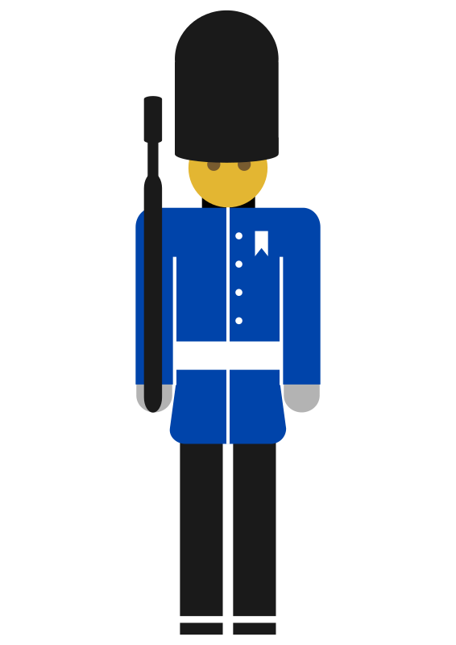

Live DevLog
| 18 Aug 2018 |
| 15:46:59 | TEST |  Let's see if that's correct.... Let's see if that's correct.... |
| 15:46:48 | FIXED |  This SHOULD fix it This SHOULD fix it |
| 15:38:17 | KTHURA |  Let's tackle that.... Let's tackle that.... |
| 15:37:58 | CONFIRMED |  Looking at the code I can say that that is indeed the issue Looking at the code I can say that that is indeed the issue |
| 15:33:57 | SOLVED |  And I think I know why the gates don't animate... I think a feature in Kthura is being called that may not have been properly translated into it's Lua counterpart... And I think I know why the gates don't animate... I think a feature in Kthura is being called that may not have been properly translated into it's Lua counterpart... |
| 15:33:13 | STATUS |  Everything looks like it's in order Everything looks like it's in order |
| 15:26:22 | TEST | Let's GO! |
| 14:58:50 | STATUS | Some more testing is in order as all the stuff until the first boss is now in... :-/ |
| 14:54:00 | MAP |  Area 009 Area 009 |
| 14:50:52 | ITEM |  Ruby Ruby |
| 14:49:11 | MAP | Area 008 |
| 14:49:05 | MAP | Area 007 |
| 14:42:22 | MYSTERY |  I do not now why the warding gates do not animate.... They should, but they don't, at least, as far as I can see now.... :-/ I do not now why the warding gates do not animate.... They should, but they don't, at least, as far as I can see now.... :-/ |
| 14:14:48 | CONFIRMED | Not only that, but I can also confirm that revealed Warding Gates are properly saved as such |
| 14:14:28 | CONFIRMED | #143 has been fixed |
| 13:20:14 | TEST | Let's test this |
| 13:17:17 | NOTE |  This also fixes that Ryanna keeps walking, however this was just a cosmetic thing, but still a good thing, as it made things not make sense. This also fixes that Ryanna keeps walking, however this was just a cosmetic thing, but still a good thing, as it made things not make sense. |
| 13:16:33 | FIXED | #143 Should be fixed now, but that has not yet been tested |
| 13:12:08 | PHANTASAR |  And to another manuscript another chapter has been added. And to another manuscript another chapter has been added. |
| 17 Aug 2018 |
| 22:38:56 | STATUS | And on that note, I'll call it a day.... see ya ;) |
| 22:38:25 | STATUS | My focus will (for now) lie on the black tower and the equipment system |
| 22:36:53 | DONE |  Some sorting out backstage Some sorting out backstage |
| 22:36:14 | BACKUP |  Running Running |
| 22:33:46 | GITHUB |  Up-to-date! Up-to-date! |
| 21:00:52 | ALPHA |  Updating Updating |
| 20:52:32 | BUG |  #143 (But that is for tomorrow, as I'm really getting tired now). #143 (But that is for tomorrow, as I'm really getting tired now). |
| 20:42:25 | TEST | Take VI |
| 20:42:20 | FIXED | missing boxtext data |
| 20:34:21 | DONE | I've also activated Yirl as NPC cameo, but that will not be what this test will be about. |
| 20:32:49 | TEST | Take V |
| 20:32:41 | CONFIRMED | Although the Warding Gate did properly activate.... Cool! |
| 20:32:20 | FIXED | Sysvar type illegal |
| 20:21:47 | TEST |  Take IV Take IV |
| 20:21:33 | FIXED | Which has now (of course) been fixed |
| 20:21:22 | SOLVED | Ah, a LÖVE error |
| 20:20:40 | BUG | Invalid Draw Mode 0? What the fuck is that? |
| 20:16:51 | NOTE | For now I'll just make sure all BUGS are fixed, after that I'll run the backup and update the alpha to call it a day |
| 20:12:39 | CONFIRMED | NOW everything works as fast as it should, so perhaps the 100 floor idea can still be done, however I really must see how much that will be on the longer run.... |
| 20:12:10 | FIXED | Switched error |
| 20:06:08 | TEST | Take III |
| 20:06:03 | TEST | And now, I'll take a look what will happen if I do take the full 100 floors into account again |
| 20:05:34 | MAP | Crystals on floor 001 |
| 20:04:54 | FIXED | And a "nil" value fixed |
| 20:04:31 | SOLVED | I think I found out why it takes so long |
| 19:53:19 | DEBUG |  Hopefully this debug line can tell me why... Hopefully this debug line can tell me why... |
| 19:53:09 | FAILURE |  It still takes forever It still takes forever |
| 19:43:24 | TEST | Take II |
| 19:42:56 | LUA |  Cutting done Cutting done |
| 19:39:23 | LUA | Removing all the floors now would be rather dangerous for Kthura, but I can "cheat" my way around things.... |
| 19:19:28 | FAILURE | It seems this level is too big for LOVE to handle, and actually I should have expected that.... I guess I'll reduce the dungeon from 100 floors to 25, and actually that is also easier on me for development anyway |
| 19:08:24 | OFFTOPIC |  (And I really hope I won't get to take M) (And I really hope I won't get to take M) |
| 19:08:11 | TEST | Take I |
| 19:08:05 | NOTE | And that is why I won't put in Random Encounters yet! :P |
| 19:07:47 | TEST | Of course, now it's time to put this to the test. |
| 19:07:24 | LICENSE |  Again as a few things didn't go right Again as a few things didn't go right |
| 19:06:23 | LICENSE | Xtra update |
| 19:05:52 | MAP | Area 006 |
| 18:45:12 | CONFIG |  A bit of pre-config, for later use A bit of pre-config, for later use |
| 17:56:06 | NOTE | And since the hard mode was developed for those who love frustration the reset is there ALWAYS to floor 0! Yeah that skill was meant for people who have no life after all! |
| 17:55:25 | SCRIPT |  In casual that only goes for the levels ending on 0 In casual that only goes for the levels ending on 0 |
| 17:55:08 | NOTE | in the easy mode that is |
| 17:54:58 | SCRIPT | Each five levels the warding gates will send you to the last floor of which the number ends with either 5 or 0 |
| 17:50:16 | CONFIG | Skill grabber |
| 17:48:17 | FIXED | Init would throw nil error |
| 17:47:32 | FIXED | Issue with gate numbering (all numbers must be unique but the counter didn't increase). |
| 17:46:02 | SCRIPT | Made sure the auto gate initializer only responds to gates and not to other objects |
| 17:43:51 | MAP | Area 005 |
| 17:43:46 | MAP | Area 004 |
| 17:43:41 | MAP | Area 003 |
| 17:43:36 | MAP | Area 002 |
| 17:43:30 | MAP | Area 001 |
| 17:42:28 | MAP | Area 000 |
| 17:16:47 | FAILURE | CRASH! But I think I know why that happened |
| 17:09:42 | LINK |  Achievement linked to both nethworks Achievement linked to both nethworks |
| 17:09:24 | ANNA |  Achievement copied to Anna Achievement copied to Anna |
| 17:06:53 | GAMEJOLT |  Achievement copied to Game Jolt Achievement copied to Game Jolt |
| 17:05:04 | ACHIEVEMENT |  If at first you don't succeed, try and try again! If at first you don't succeed, try and try again! |
| 17:02:20 | SCRIPT | The script for the warding gates has been set up, although I doubt it works yet |
| 16:42:59 | UPDATED |  bcredits.md bcredits.md |
| 16:42:49 | LICENSE | Properly set in order now |
| 16:32:50 | JUDGMENT |  I see I must take care of ONE thing, though.... :-/ I see I must take care of ONE thing, though.... :-/ |
| 16:31:35 | RYANNA |  And now a test build must be made to see if everything will be packed accordingly And now a test build must be made to see if everything will be packed accordingly |
| 16:30:47 | ART |   And brought all this in position And brought all this in position |
| 16:30:14 | JCR6 |  Bundled everything accordingly Bundled everything accordingly |
| 16:29:59 | JUDGMENT | THAT should do it! |
| 16:03:52 | BLITZMAX |  tester written tester written |
| 15:58:48 | STATUS | Not fully the way I wanted it to be, but I do see some nice effects I need to properly test out |
| 15:58:30 | GENERATION |  And regenerations And regenerations |
| 15:58:25 | FIXED | Moar fixes |
| 15:39:08 | GENERATION | Let's try this again... |
| 15:39:02 | FIXED | I think |
| 15:38:40 | BUG | Nope...it's not, but I can see why ;) |
| 15:35:51 | GENERATION | Graphics generated, but I need to check if it's all good... |
| 15:34:29 | BLITZMAX | Small program created to generate the warding gate graphics |
| 14:10:17 | FIXED | Filename wrong |
| 14:09:45 | SCRIPT | Empty script created for map events Black Tower |
| 14:06:01 | CONFIRMED | At least that part went well in one go |
| 13:45:50 | TEST | And now I'll have to see if things work the way it was intended |
| 13:45:26 | UPDATED | Another update to credits.md |
| 13:44:28 | LICENSE | Updating |
| 13:39:23 | UPDATED | Credits.md |
| 13:38:39 | MAP | And area 000, has been designed |
| 13:36:30 | FAILURE | After all it would be a total disaster if you did less than 450484 hours for something that only should take 5 seconds to complete |
| 13:35:49 | FIXED | And all errors the computer created for reasons beyond me, have been fixed |
| 13:03:28 | GENERATION | And generated a "skeleton" Black Tower dungeon -- Neat huh? |
| 12:57:41 | WORLDMAP |  link now properly established link now properly established |
| 12:56:21 | SCYNDI |  Small Generation program to generate the 101 basic floors for the Black Tower.... All I need to do now is manipulate them for the "greater good".... Small Generation program to generate the 101 basic floors for the Black Tower.... All I need to do now is manipulate them for the "greater good".... |
| 12:39:29 | NOTE | it's a bit "part of the joke" that all rooms are in basic the same with only a few changes on every floor |
| 12:38:55 | MAP | Skeleton room set up for the Black Tower |
| 12:27:42 | VERIFIED |  It was all in order though It was all in order though |
| 12:27:34 | CHECKED | License issue |
| 12:22:55 | CAMEO | Yirl |
| 12:11:14 | ART | Stairs |
| 12:07:19 | UPDATED | #141 Now contains all files I have (for now, as some are still in a 'waiting room', and I need to sort those out later). |
| 11:59:26 | MUSIC |  And I'm currently listing out the music I have or plan to use in #141 And I'm currently listing out the music I have or plan to use in #141 |
| 11:58:52 | MUSIC | "Danger Storm" by Kevin McLeod will now serve as the background tune for the Black Tower |
| 11:28:37 | MAP | Created a new empty map which will be used to create the Black Tower |
| 11:22:38 | ART | Textures for the Black Tower are in |
| 16 Aug 2018 |
| 21:47:28 | GAMEJOLT |  As this update was too little I won't take the trouble to upload to Game Jolt As this update was too little I won't take the trouble to upload to Game Jolt |
| 21:46:04 | ALPHA | Update on itch.io |
| 21:45:19 | BACKUP | Running |
| 18:50:43 | MEDICAL |  Unfortunately things did not get better in time... sorry! Unfortunately things did not get better in time... sorry! |
| 15:28:00 | MEDICAL | I still don't feel good, but not as bad as it used to be.... However now some "real life" duties are in my way.... C'est la vie... |
| 13:25:52 | MEDICAL | I feel terrible |
| 11:50:42 | FAILURE | Although Github had a bit of trouble understanding what I wanted :-/ |
| 11:49:37 | UPDATED | #2 |
| 11:45:49 | CONFIRMED | At least Ryanna didn't throw an error |
| 11:11:30 | FAILURE | And for some odd reason everything lags |
| 11:10:26 | RYANNA | A test build is now running to make sure the aliasing works as intended |
| 10:46:23 | NOTE | And this should allow you to transform Ryanna into IJsblokje without any trouble. |
| 10:39:55 | UPDATED | #84 |
| 10:39:38 | ART |  Sprites for IJsblokje Sprites for IJsblokje |
| 10:31:30 | BACKUP |  Extra backup running Extra backup running |
| 10:29:17 | PHANTASAR | Novel complete... Proper announcements will come later. |
| 15 Aug 2018 |
| 16:05:32 | GAMEJOLT | Updated alpha devlog (only visible to Alpha testers). |
| 14:57:53 | STATUS | I'll plan later how to do things next... |
| 14:57:40 | UPDATED | #1 |
| 14:56:55 | NOTE | #7 |
| 14:55:02 | BACKUP | And run the backup |
| 14:54:36 | GAMEJOLT | as on Game Jolt |
| 14:54:31 | ITCH.IO |  Both on Itch Both on Itch |
| 14:54:24 | ALPHA | Of course, I'll update the alpha |
| 14:53:41 | STATUS | Well I got even less time as planned so that will be all for now, but any fixed bug is one step forward (and one I don't have to fix later), right? |
| 14:52:53 | CLOSED |  #86 #86 |
| 14:51:57 | FIXED | Indeed it's fixed now |
| 14:46:50 | TEST | Well Let's test this.... :-/ |
| 14:45:12 | CLEANUP |  Deactivated the debug line, so it shouldn't show any more Deactivated the debug line, so it shouldn't show any more |
| 14:44:46 | STUPIDITY |  Well I guess I can go to the Hall of Shame.... Well I guess I can go to the Hall of Shame.... |
| 14:44:24 | SOLVED | Because I only put in the constant value (for testing initially) and forgot to substitute it with the variable |
| 14:43:50 | CHECKED | Right, the debug data rule the possibility of this bug out, but why does it then still happen? |
| 14:39:08 | TEST | AGAIN! |
| 14:38:57 | COCKROACH |  GRRR! GRRR! |
| 14:35:06 | DEBUG | Oh, th itext font didn't have a / -- Let's do it differently then (sheesh) |
| 14:30:23 | DEBUG | I've added a debug line which should clarifiy a few things, as this is really getting crazy! |
| 14:25:14 | RESULT | And that is indeed not what happens.... |
| 14:20:03 | EXPERIMENT |  I've done a few code alterations, but none of them SHOULD cause any visual effect, but I gotta try something, eh? I've done a few code alterations, but none of them SHOULD cause any visual effect, but I gotta try something, eh? |
| 14:16:08 | MYSTERY | It's rather odd, as what I see should NOT grant the possibility not to do this right, so I really do not understand. |
| 14:09:24 | LUA |  IDE refresh IDE refresh |
| 14:05:50 | INVESTIGATION |  And let's start by trying to find out how #86 happens exactly (I think I already know, but I need confirmation). And let's start by trying to find out how #86 happens exactly (I think I already know, but I need confirmation). |
| 14:05:21 | STATUS | My time is limited today, so I'll focus on the smaller things... |
| 14 Aug 2018 |
| 20:50:11 | STATUS | And now I'm gonna cook my dinner and call it a day, see ya! |
| 20:49:44 | DONE | And turned on my rice cooker |
| 20:46:44 | DONE | Measured the rice for dinner tonight |
| 20:42:44 | SYSTEM |  Some extra suff updated Some extra suff updated |
| 20:38:27 | NOTE | Sorry! |
| 20:38:23 | GAMEJOLT | and NOT on Game Jolt.... |
| 20:38:14 | ITCH.IO | However that will THIS time ONLY happen on Itch.io |
| 20:38:02 | ALPHA | Update |
| 20:37:47 | SYSTEM | And a few updates here too |
| 20:35:57 | BACKUP | Is running |
| 20:35:09 | GITHUB | Pushed credits |
| 20:35:00 | GITHUB | Pushed preparations |
| 20:33:10 | UPDATED | Credits.md |
| 20:31:43 | TECHNO |  Although I must confess when I set it up I didn't realize I'd be chaning this much... It wasn't that way in my earlier projects, ya know :P Although I must confess when I set it up I didn't realize I'd be chaning this much... It wasn't that way in my earlier projects, ya know :P |
| 20:31:18 | TECHNO | In case you wondered These datacopies came from the generator and the actual folder holding the data. This was required as otherwise the equipdata would not be taken into account causing a bug... |
| 20:29:38 | NOTE | I know it's sick that I have to note it these days, but the order above is strictly alphabetical based on the first letters of their names.... |
| 20:29:03 | CHARACTER |  Datacopy: Shirley Datacopy: Shirley |
| 20:28:32 | CHARACTER | Datacopy: Ryanna |
| 20:28:07 | CHARACTER | Datacopy: Nino |
| 20:27:47 | CHARACTER | Datacopy: Lirmen |
| 20:24:24 | LICENSE | Updated |
| 20:23:08 | DONE | Spiced my chicken for dinner |
| 20:16:22 | DEBUG | According to my IDE there are at least no parse errors... All I can do (for now) is trust on that... :-/ |
| 20:14:45 | NOTE | I do need to actual level ups from either Ryanna or Nino before I can actively test if that works, and until that time, I have to leave the equiment system for what it is... |
| 20:14:12 | DONE | I've set up a system that allows me to put in the equip menu in place |
| 20:08:46 | CONFIG | When running the game will (on the status screen) automatically calculate how many equipment piences you can carry... If you can carry any at all that is. :P |
| 20:03:53 | CHECKED | A bit of the screen sizes... Due to the variable screen size I must improvise a little, as I cannot be sure if everything will always fit on screen |
| 19:58:47 | SCRIPT | A little code move... I think that will come out better :-/ |
| 19:57:39 | NOTE | It is very important to note that it will depend on a few things within development if it actually possible to reach these maximums at all... The game has a hard level cap of 1000, but that was only to be safe, as it has not been decided how many travel medals will be available in game. |
| 19:56:33 | CONFIG | In the HARD mode the absolute maximum is 10 equipment spots... It will differ per character how many levels will be required to reach that max |
| 19:55:03 | CONFIG | In the CASUAL mode the absolute maximum is 20 equipment spots... It will differ per character how many levels will be required to reach that max |
| 19:54:52 | CONFIG | In the EASY mode the absolute maximum is 25 equipment spots... It will differ per character how many levels will be required to reach that max |
| 19:54:03 | CONFIG | I've set up the factor on which equipment fields will be added |
| 19:48:12 | STATUS |  Let's sort things out a little, for the equipment system.... Let's sort things out a little, for the equipment system.... |
| 19:43:36 | LUA | IDE Refresh |
| 19:28:47 | CONFIRMED | An it's a miracle.... EVERYTHING WENT RIGHT IN ONE GO.... I should tell CNN about that! |
| 19:28:05 | GAMEJOLT | Alpha testers can now dl the newest version on GJ |
| 19:00:14 | ALPHA | Well, Ryanna should once I get everything on the move, be able to equip her first time from level 6 or higher in the normal difficulty mode, however that will only work on savegames on which she didn't reach that level yet. Don't dispair if your Ryanna is already higher though, as gaining a level will "fix" all data automatically setting everything right, like it was never elseway.... |
| 18:58:40 | ALPHA | Alpha players should note that the current alpha version takes NOTHING of this into account. |
| 18:57:40 | NOTE | None of this is scripted yet, but a run a few calculations in Python to see if I get what I wanted to see.... |